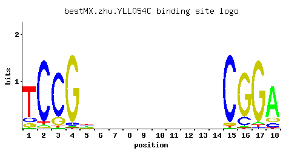

← All factors / TF RECORD
YLL054C
No recorded aliases
Function unknown
01 / RECOMMENDED MATRIX
Best-performing DNA-binding model.

Fisher’s P-valueNo data
Information content12.83
Max PWM score14.53
Recommended cutoff10.89
View and copy the recommended matrices ↘
Position frequency matrix (PFM)
A | 0.02 0.03 0.01 0.02 0.20 0.25 0.25 0.25 0.25 0.25 0.25 0.25 0.25 0.25 0.01 0.02 0.04 0.75 C | 0.12 0.91 0.81 0.04 0.25 0.25 0.25 0.25 0.25 0.25 0.25 0.25 0.25 0.25 0.93 0.16 0.02 0.11 G | 0.11 0.02 0.16 0.93 0.19 0.25 0.25 0.25 0.25 0.25 0.25 0.25 0.25 0.25 0.04 0.81 0.91 0.12 T | 0.75 0.04 0.02 0.01 0.35 0.25 0.25 0.25 0.25 0.25 0.25 0.25 0.25 0.25 0.02 0.01 0.03 0.02
Position count matrix (PCM)
A | 2 3 1 2 20 25 25 25 25 25 25 25 25 25 1 2 4 75 C | 12 91 81 4 25 25 25 25 25 25 25 25 25 25 93 16 2 11 G | 11 2 16 93 19 25 25 25 25 25 25 25 25 25 4 81 91 12 T | 75 4 2 1 35 25 25 25 25 25 25 25 25 25 2 1 3 2
Position weight matrix (PWM)
A | -2.77 -2.37 -3.47 -2.77 -0.47 -0.25 -0.25 -0.25 -0.25 -0.25 -0.25 -0.25 -0.25 -0.25 -3.47 -2.77 -2.08 0.85 C | -0.41 1.62 1.50 -1.50 0.33 0.33 0.33 0.33 0.33 0.33 0.33 0.33 0.33 0.33 1.64 -0.12 -2.20 -0.49 G | -0.49 -2.20 -0.12 1.64 0.05 0.33 0.33 0.33 0.33 0.33 0.33 0.33 0.33 0.33 -1.50 1.50 1.62 -0.41 T | 0.85 -2.08 -2.77 -3.47 0.09 -0.25 -0.25 -0.25 -0.25 -0.25 -0.25 -0.25 -0.25 -0.25 -2.77 -3.47 -2.37 -2.77
02 / COMPARATIVE BENCHMARKS
Alternative candidate matrices 2
Historical matrix candidates from the original ScerTF database. Expand a source to inspect its original logo, scores, and matrix values.
YLL054CBadis et. al.P = No dataView matrix ↘
YLL054CZhao and StormoP = No dataView matrix ↘
03 / EXPERIMENTAL CONTEXT
Gene-level annotations and interactions.
Genes bound in ChIP-chip experiments 1 genes
No Data
Genes affected by TF deletion 1 genes
No Data
Genes supported by both experiments 1 genes
No Data